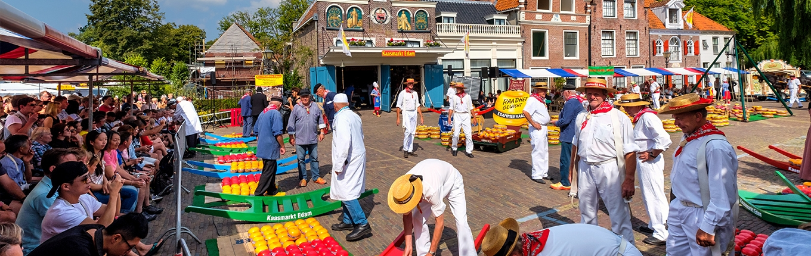
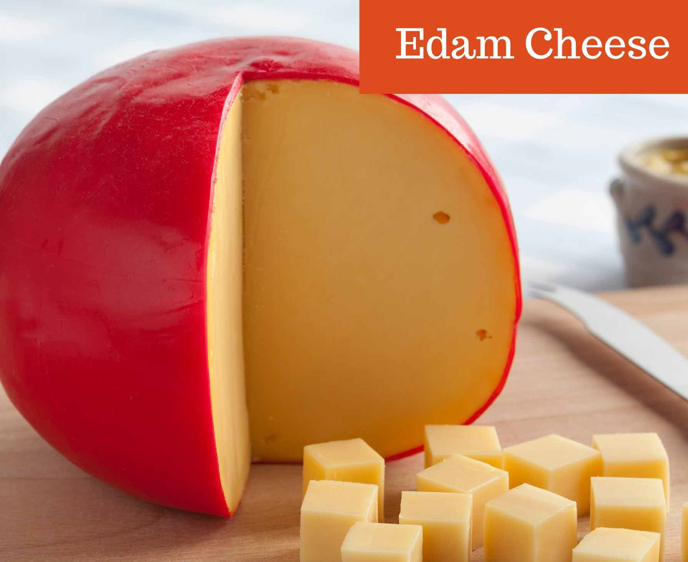
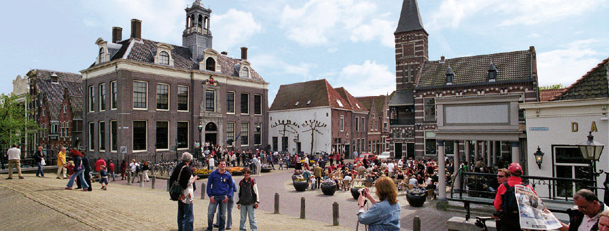
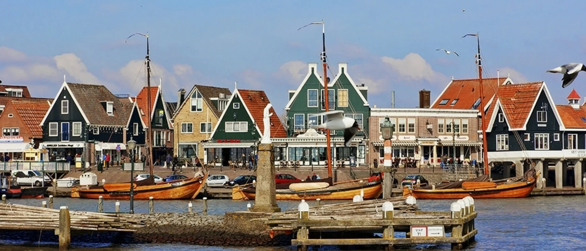
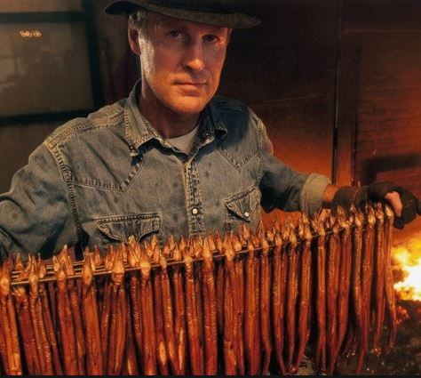
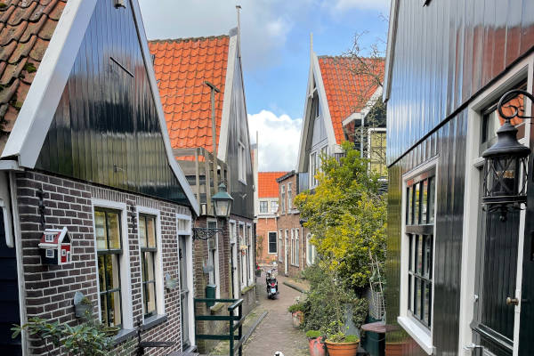

Edam :

Edam een heerlijk ouderwets ogend stadje wat in het buitenland ook wel eens wordt vergeleken met Amsterdam, vandaar dat toeristen de stad ook wel eens "little" Amsterdam noemen.Maar wellicht nog het bekendste is die rode ronde kaas !

Nu is er naast een bezoek aan het museum in de binnenstad nog veel meer te zien en beleven in dit stadje, zo zijn er in de zomermaanden ook de kaasmarkten.

Uiteraard kun je als je liever voor de rust gaat deze ontlopen en gewoon heerlijk in de binnenstad wandelen en genieten van de oud hollandse gebouwen. Geniet van de omgeving op een mooie zomerse dag !
En wellicht hoor je de fanfare het volkslied van Edam wel ergens spelen.
Ga naar boven
Volendam :

Volendam is een heerlijk ouderwets ogend dorpje wat in het buitenland wordt gezien als een plek waar de mensen nog in klederdracht lopen, vandaar dat toeristen ook nog wel eens raar staan te kijken als er weer eens een feestje is op de dijk met al die kroegen.Maar wellicht nog het bekendste is de gerookte paling !

Nu is er naast een bezoek aan het museum in de oude kom nog veel meer te zien en beleven in dit dorpje, maar echt veel verder als de dijk hoef je niet te gaan.

Uiteraard kun je heerlijk verdwalen op het doolhof met zijn vele kleine huisjes en wereld beroemde gele bruggetje en genieten van de omgeving op een mooie zomerse dag !
En wellicht hoor je vanuit een kroeg het volkslied van Volendam.
Ga naar boven